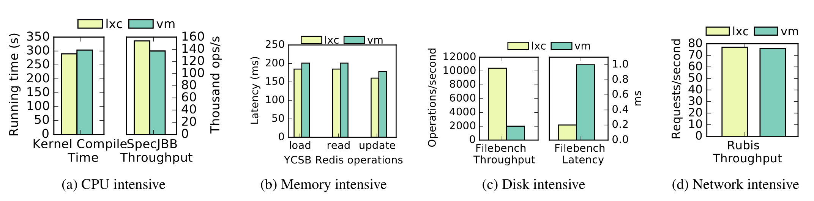
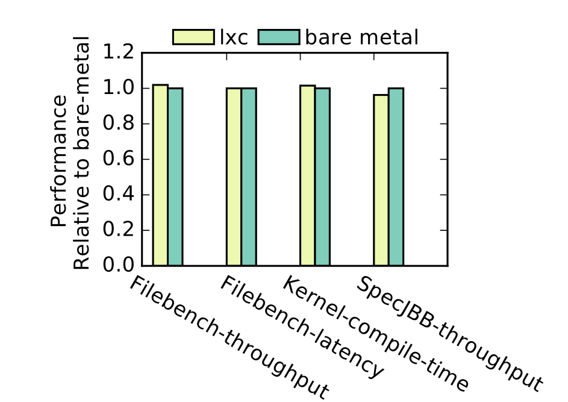

✘ Container can go from one Linux OS to another but not from
Windows to Linux
✘ Isolation is not as good as in VM (security)
4.1 What about Performances? cite:SCJS16
Performance overhead for KVM is negligible for CPU/Memory/Network
workloads, but high in case of IO intensive App.

Performances of container and bare metal are equivalent (2%)

5 Exercise: Start & Operate Virtualized Env.
Experiment the VM and Container look, feel and operate like a real
physical machine. Run the following commands into a VirtualBox VMs
(optionally KVM), and a LXC container (optionally chroot) – refer to
the next section for the setup.
~$ sudo touch -c /etc/hosts # Set timestamp to now (Virtualized env. only)
~$ stat -c %y /etc/hosts # Print timestamp
~$ ip address show scope global up # Get the IP adrdress
~$ top # List proc., CPU (press 1), Memory (Mem)
~$ sudo pkill dhclient -e # Kill dhclient (Virtualized env. only)
~$ uname -a # Display linux kernel info
While running the commands, compare to your physical machine.
Does VM and Container look, feel and operate like a real physical
machine?
What we could say about resources management and isolation on VMs?
on containers?
You can run any command of the Operating System in the container. So,
you can run a sh program that will drop you into your container.
~$ docker run -ti alpine /bin/sh
~$ docker exec -ti my-container /bin/bash # to connect on an already# running container
Inside the container redo the command of the first exercise.
What are you noticing about the top output?
Is it possible to establish a SSH connection with your container?
How are you supposed to operate your container?
Do a docker inspect to find information on you running container.
Note that the container finished as soon as its process finished. Here
we start a bash process. So your container will finished as soon as
you will hit Ctrl+d to quit bash, except if you start it in the
background.
8.4 DO: Define your own Image (nginx server)
Build your own Image that runs a Nginx HTTP server
Docker build your custom image with docker build command.
~$ docker build -t img-nginx .
At the end, you can check that your image is effectively here.
~$ docker images|fgrep img-nginx
Now run your containerized Nginx server.
~$ docker run --name my-nginx -p 8080:80 -d img-nginx
Then check that you can access it at http://127.0.0.1:8080. Explains
the -p parameter used in the previous command? What you have to do
if you wanna start a second Nginx container?
When you connect on http://127.0.0.1:8080, Nginx serves the
index.html file located at /var/www/html/ in your container. Write
a new index.html on the host machine a try to figure out which
command should be used in docker run to use your file instead of the
default one.
cat ./index.html
Index on the host file system
8.6 Put a database into your container (and make containers collaborate)
In this part we will run a CockroachDB database in a container and then
connect to it in a second container. First, as usual, search and
pull the CockroachDB image.